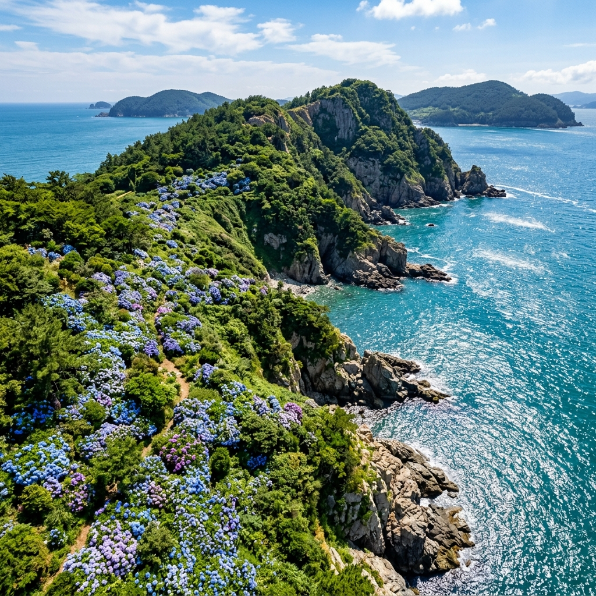
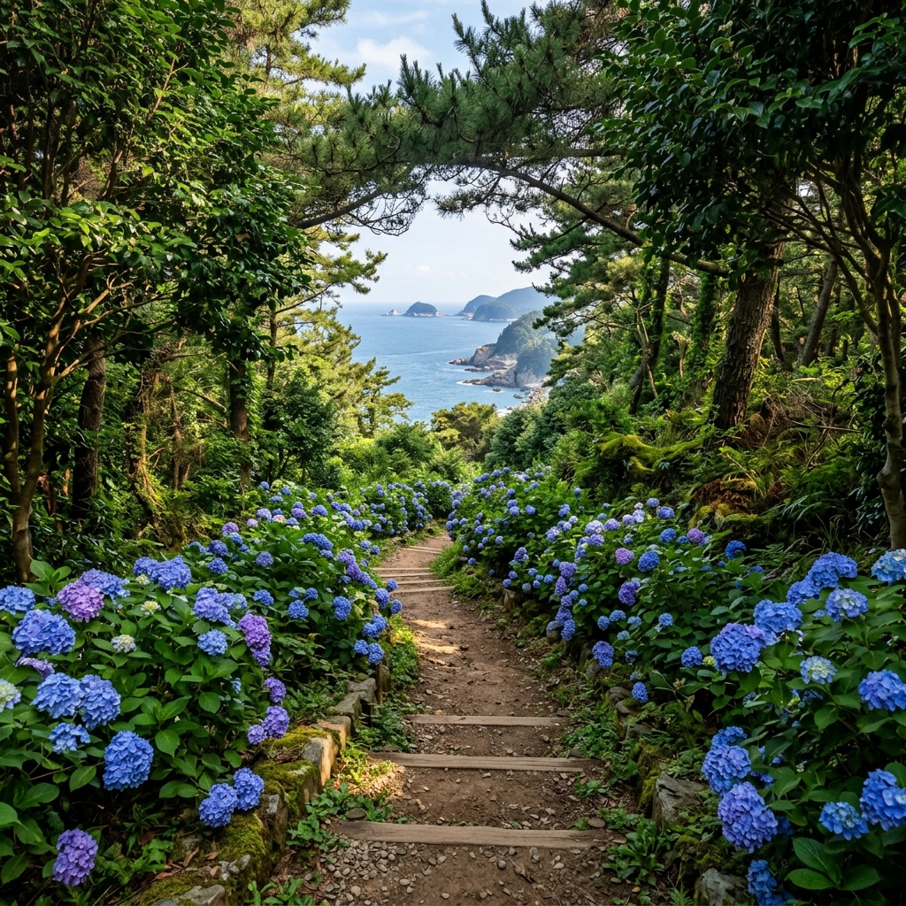
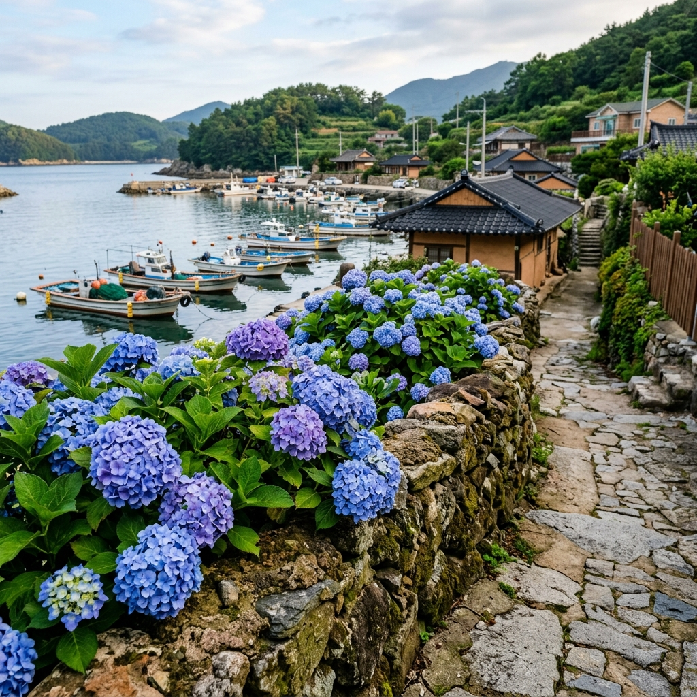

거제 공곶이·저구마을 수국 — 남해안 수국 군락 인생샷 명당 가이드
📍 핵심 요약
거제도 공곶이는 겨울 동백과 수선화로 이름 높지만, 6월이 되면 또 한 번 절정을 맞이합니다. 바로 수국 시즌입니다.
남해 쪽빛 바다를 배경으로 한 수국 군락은 어느 곳과도 비교하기 어려운 고유의 색감을 자랑합니다.
인근 저구마을까지 함께 둘러보면 바다 뷰와 수국, 그리고 거제 해안도로의 낭만까지 한 번에 챙길 수 있습니다.
이 글에서는 공곶이까지 가는 법, 수국 명당 포인트, 저구마을 연계 코스, 교통·주차 정보를 모두 정리해 드립니다.
① 거제 공곶이 수국, 6월에 왜 특별한가
경남 거제시 남부면 저구리에 위치한 공곶이는 사실 배를 타거나 산길을 걸어야만 닿을 수 있는 반도 지형의 끝자락입니다.
교통 불편이 오히려 이곳을 더욱 특별하게 만들었습니다. 쉽게 갈 수 없기에 대규모 관광 개발이 이루어지지 않았고, 덕분에 거제의 원래 자연 풍경이 손대지 않은 채로 남아 있습니다.
이곳의 수국은 야생에 가까운 형태로 자랍니다. 해발 10~50m 사이 경사면에 군락을 이루며, 바다에서 올라오는 해무(海霧)를 맞고 자란 탓인지 꽃잎이 유독 두툼하고 색이 진합니다.
파란색과 보라색이 섞인 수국이 남해의 짙은 청록색과 만나는 장면은, 제주도나 통영과도 다른 거제만의 빛깔을 보여 줍니다.
공곶이 수국의 절정은 대체로 6월 둘째~셋째 주입니다. 남해안에 위치해 내륙보다 개화가 빠른 편이므로, 전국 수국 시즌이 시작되기 직전 '가장 먼저 만나는 수국 성지'로 각광받고 있습니다.
② 공곶이 접근법 — 배냐 트레킹이냐
공곶이를 방문하는 방법은 크게 두 가지입니다.
방법 1. 예구마을 → 공곶이 트레킹
가장 일반적인 방법입니다. 예구마을 주차장에 차를 세우고 산길을 따라 약 1.5km(편도 40분)를 걸어갑니다. 경사가 있지만 데크길과 흙길이 잘 정비되어 있어 등산 장비 없이도 충분합니다.
이 트레킹 코스 자체도 수국과 동백나무, 야생화가 어우러져 걷는 내내 풍경이 아름답습니다. 걷는 것이 번거롭게 느껴질 수도 있지만, 실제로 다녀온 방문객 대부분이 '걷는 길 자체가 여행의 일부'라고 평가합니다.
방법 2. 소형 선박(도선) 이용
저구항에서 소형 선박을 이용해 공곶이까지 약 10~15분 만에 도착하는 방법도 있습니다. 운행은 계절·날씨에 따라 유동적이므로 방문 전 저구마을 상가에 직접 문의하거나 현지 정보를 확인하는 것이 안전합니다.
선박을 이용하면 바다에서 공곶이 수국 군락 전체를 조망하는 독특한 경험이 가능합니다. 육지에서 보는 것과 완전히 다른 구도의 사진을 찍을 수 있어 사진 애호가에게 강력히 추천합니다.

거제 공곶이 전경 — 바다와 수국이 어우러진 남해안의 절경 / AI 제작 이미지
③ 공곶이 수국 군락 포토존 TOP 5
공곶이 내부는 여러 개의 작은 군락으로 나뉘어 있습니다. 이 중 특히 사진이 잘 나오는 포인트 5곳을 소개합니다.
1. 해변 도착 직전 경사면
트레킹 코스 막바지에 해변이 보이기 시작하는 지점 양쪽에 수국이 군락을 이룹니다. 배경으로 남해가 들어오는 구도가 자동으로 완성됩니다.
2. 작은 해변 모래사장 뒤쪽
공곶이 해변은 아담한 자갈밭과 모래사장으로 이루어져 있습니다. 해변에 서서 뒤를 돌아보면 경사면 가득 수국이 펼쳐지는 그림 같은 장면을 만나게 됩니다.
3. 동백나무 사이 수국 군락
겨울 동백으로 유명한 이 지역의 동백나무들은 여름에도 짙은 초록잎을 자랑합니다. 이 진녹색 잎사귀와 파란 수국의 대비가 상당히 강렬합니다.
4. 소나무 숲 사이 수국길
트레킹 중간 소나무 숲 구간에 수국이 도열해 있어 '꽃터널'에 가까운 장면을 연출합니다. 소나무 가지 사이로 빛이 들어오는 오전 시간이 최적입니다.
5. 바위 끝 전망 포인트
해변 끝쪽 작은 바위 위에 올라서면 공곶이 전체를 한눈에 담을 수 있습니다. 수평선과 수국, 해안선이 한 프레임에 들어오는 유일한 지점입니다.
④ 저구마을 연계 코스 — 바다 뷰와 수국의 조화
공곶이를 방문했다면 바로 옆 저구마을을 빼놓을 수 없습니다.
저구마을은 거제 최남단에 위치한 작은 어촌 마을로, 외부에 많이 알려지지 않은 '숨은 보석' 같은 곳입니다. 마을에서 내려다보이는 해안 풍경 자체도 아름답지만, 6월에는 마을 담장과 골목 사이사이에 수국이 피어나 전혀 다른 표정을 보여 줍니다.
저구마을에서는 거제 최남단의 매물도·소매물도 가는 배도 탑승할 수 있습니다. 저구항에서 쾌속선을 타면 소매물도까지 약 30분이 걸립니다. 공곶이 수국 감상 후 소매물도로 넘어가는 1박 2일 코스도 인기입니다.
저구마을에는 작은 민박집과 횟집이 있어 당일 점심 식사를 해결하기 좋습니다. 거제 해협에서 잡아 올린 싱싱한 생선회나 멍게비빔밥은 이 지역 별미입니다.
⑤ 공곶이~예구마을 트레킹 코스 상세
예구마을 주차장 → 공곶이 해변까지의 트레킹 코스는 총 편도 약 1.5km로, 천천히 걸으면 40분, 빠르게 걸으면 25분이면 도착합니다.
구간별 정보
출발점: 예구마을 주차장 (도로변 주차 공간 포함해 총 30여 대 수용)
→ 초반 약 500m: 완만한 오르막, 주변 수국·야생화 많음
→ 중반 약 500m: 소나무 숲 통과, 동백나무 군락 시작
→ 종반 약 500m: 급경사 내리막, 해변 조망 포인트 다수
도착: 공곶이 해변
트레킹 코스 전반에 걸쳐 방향 안내 표지판이 설치되어 있으며, 길을 잃을 우려는 거의 없습니다. 다만 급경사 구간에서 미끄러지지 않도록 주의가 필요합니다.
비가 온 직후에는 흙길이 미끄러워질 수 있습니다. 가급적 등산화 또는 미끄럼 방지 신발을 착용하시길 권합니다.
왕복 기준 약 1시간 30분이 소요되므로, 저구마을 방문까지 포함하면 반나절 일정을 잡는 것이 적절합니다.

공곶이 트레킹 코스 수국길 — 바다를 향해 이어지는 꽃길 / AI 제작 이미지
⑥ 거제 해안도로 드라이브와 수국 드라이브 팁
거제는 해안도로 자체가 훌륭한 드라이브 코스입니다. 저구마을~공곶이 진입로~남부면 해안도로를 따라 운전하다 보면 군데군데 수국이 피어 있는 해안 풍경을 즐길 수 있습니다.
특히 남부면 해안 일주 도로 구간(지방도 1018호)은 왼쪽으로 바다, 오른쪽으로 수국과 야생화가 어우러지는 거제 최고의 드라이브 루트 중 하나입니다.
수국 드라이브 팁: 속도를 줄이고 잠시 차를 세울 수 있는 갓길이나 소형 주차 공간을 미리 파악해 두는 것이 좋습니다. 좁은 해안도로에 갑자기 차를 세우면 뒤차와 충돌 위험이 있으니, 반드시 안전하게 정차 가능한 공간을 확인 후 멈추세요.
거제 남부 해안도로를 따라 도장포마을, 바람의 언덕, 신선대까지 연결하면 거제 남부 당일 코스가 완성됩니다.
⑦ 거제 제철 먹거리 — 5~6월 도다리·멍게 맛집
5~6월 거제에서 빼놓을 수 없는 먹거리는 도다리와 멍게입니다.
도다리는 3월부터 제철이 시작되어 5~6월까지 살이 가장 오른 상태로 맛볼 수 있습니다. 거제 장승포항이나 고현항 인근 수산시장에서 직접 사거나, 현지 횟집에서 도다리 쑥국을 함께 즐기는 것이 이 지역 정통 방식입니다.
멍게는 거제·통영 앞바다에서 양식이 잘 이루어져 5~6월이 가장 신선한 시기입니다. 멍게비빔밥이나 멍게 회로 즐기는 방법이 일반적이며, 강렬한 바다 향미가 특징입니다.
저구마을이나 남부면 일대 작은 횟집들은 관광지 시세보다 저렴한 경우가 많습니다. 다만 카드 결제가 안 되는 곳도 있으니 현금을 어느 정도 준비해 두시길 권합니다.
⑧ 교통·주차 정보 (공곶이 진입 주의사항 포함)
| 구분 |
내용 |
| 주차장 |
예구마을 주차장 (소형차 30여 대 수용, 무료 또는 소액 유료, 현지 확인 필요) |
| 대중교통 |
거제 고현버스터미널 → 시내버스 이용 저구 방면 → 예구마을 하차 (배차 간격 확인 필수) |
| 진입로 주의 |
예구마을 진입 도로는 1차선 구간 있음. 대형차 및 캠핑카 진입 불가 |
| 거제까지 |
부산 사상터미널 → 고현버스터미널 약 50분 / 통영에서 약 40분 |
⚠️ 주의사항: 예구마을에서 공곶이까지 진입 도로는 매우 좁습니다. 주차장 용량이 제한되어 있어 수국 절정기 주말에는 조기 만차가 됩니다. 오전 8~9시 도착을 강력 권장합니다.
⑨ 거제 수국 여행 Q&A
Q. 공곶이 수국은 입장료가 있나요?
공곶이 자체는 사유지이지만 수국 시즌에는 입장이 허용되어 있습니다. 소액의 관람료를 받는 경우가 있으니 현장에서 확인하세요.
Q. 비가 올 때도 방문할 수 있나요?
수국은 비를 맞은 직후 가장 아름답습니다. 꽃잎에 빗방울이 맺혀 영롱한 느낌을 주므로, 비 온 직후 방문을 도리어 추천합니다. 단, 트레킹 코스가 미끄러우니 우의와 방수 신발을 챙기세요.
Q. 아이와 함께 트레킹이 가능한가요?
초등학생 이상이라면 충분히 걸을 수 있는 코스입니다. 경사가 있는 구간에 아이와 함께 손을 잡고 천천히 내려가야 하는 구간이 있으니 어린 아이 동반 시 여유 시간을 넉넉히 잡으세요.
Q. 거제 공곶이 외에 거제에서 수국을 볼 수 있는 곳이 있나요?
학동 몽돌해변 주변과 도장포마을 인근에도 수국이 피어 있어 드라이브 중 발견하는 재미가 있습니다. 거제 해안도로 전반에 걸쳐 6월에는 수국을 심심찮게 만날 수 있습니다.

저구마을 골목 담장 너머 피어난 수국 / AI 제작 이미지
⑩ 거제 수국 여행 전 최종 체크리스트
거제 공곶이·저구마을 수국 여행을 떠나기 전 아래 항목을 점검하세요.
✅ 방문 시기 확인: 6월 초중순이 수국 절정. SNS 또는 현지 정보로 개화 상황 확인 후 출발.
✅ 신발 체크: 미끄럼 방지 기능이 있는 운동화 또는 등산화 필수. 슬리퍼 착용 금지.
✅ 주차 계획: 주말 수국 절정기에는 오전 8시 이전 도착 목표. 카풀 또는 대중교통 적극 검토.
✅ 현금 준비: 저구마을 횟집 등 현금 결제 선호 업소 있음.
✅ 충전 배터리: 트레킹 구간에 콘센트 없음. 보조 배터리 필수.
✅ 물과 간식: 공곶이 내부 편의점 없음. 미리 물·간식 챙겨 출발.
#거제수국
#공곶이수국
#저구마을
#거제6월여행
#남해안수국
#공곶이트레킹
#거제도관광
#수국명소
#6월꽃여행
#경남여행